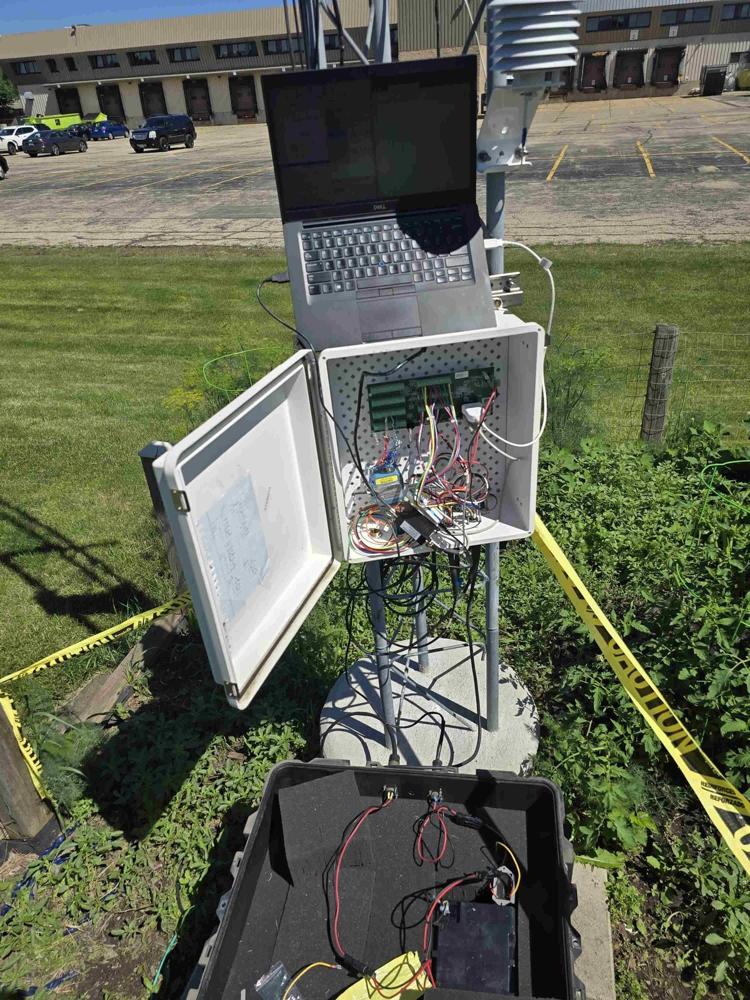
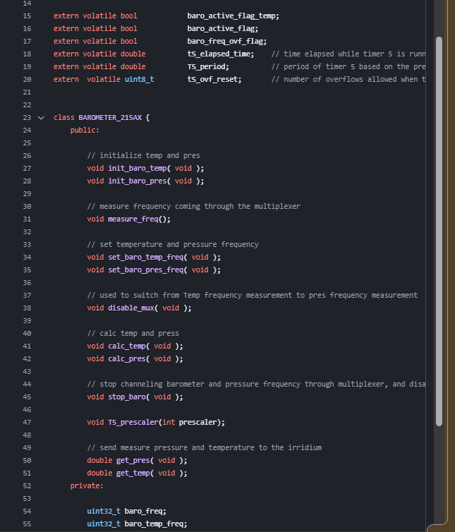
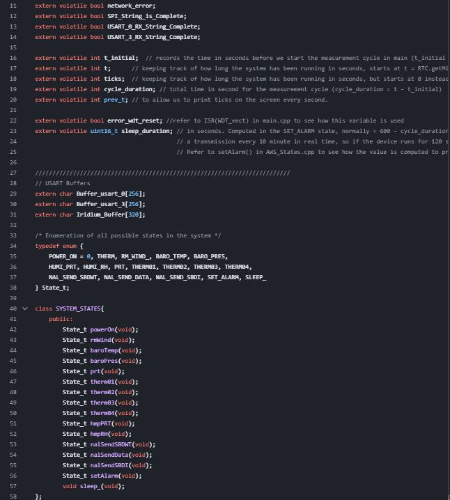
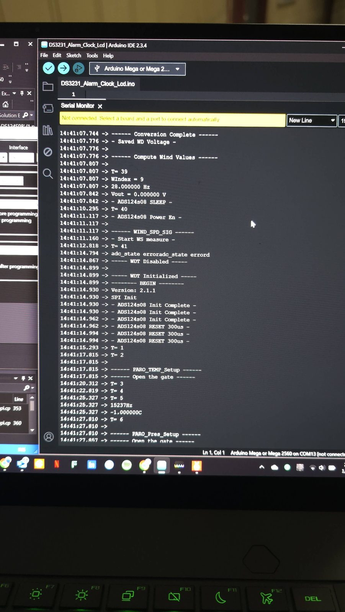

Automatic Weather Station (AWS) – Embedded Firmware
Overview
Developed embedded firmware components for an automatic weather station, including low-level sensor drivers and a finite state machine (FSM) to manage data collection, processing, and error handling for long-term deployment.
What I Built
1) Sensor Drivers in C++
- Implemented low-level C++ drivers to communicate with environmental sensors.
- Handled data acquisition, calibration, and error conditions.
- Integrated drivers into a larger embedded system and validated functionality in the field.
- Used timers + ISR-based techniques for frequency-driven sensors.
2) Finite State Machine (FSM)
- Defined system states for data collection, processing, and error recovery.
- Implemented predictable state transitions and tested edge cases for robustness.
- Integrated FSM with timing, RTC behavior, and sensor drivers.
- Designed a low-power sleep mode to reduce idle consumption.
System Images
{kind=link}

{kind=link}

{kind=link}

{kind=link}

Results
- Successfully collected and processed environmental data (pressure, humidity, temperature, etc.).
- Improved reliability and modularity of the AWS firmware through driver + FSM architecture.
- AWS operated independently in Antarctica for a full year (deployment target).
- Reduced active runtime from ~10 minutes to ~1 minute 30 seconds per cycle.
Reduced idle-mode power consumption by ~78% — 32 mA → 7 mA